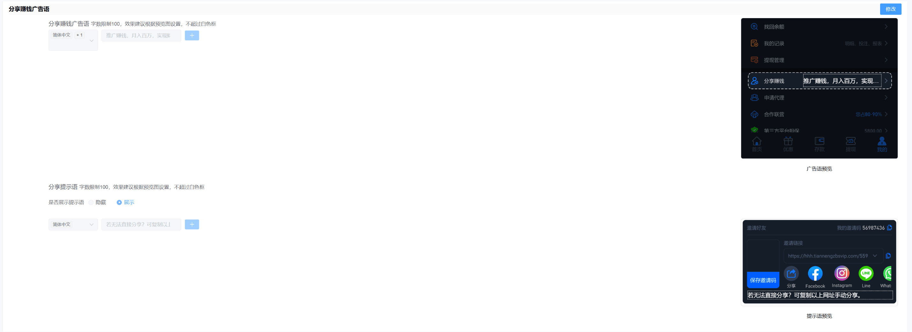
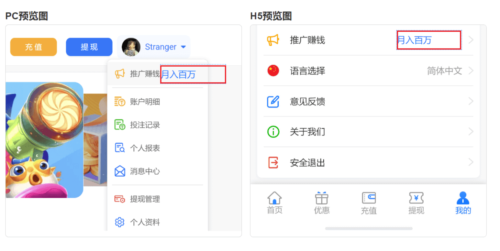
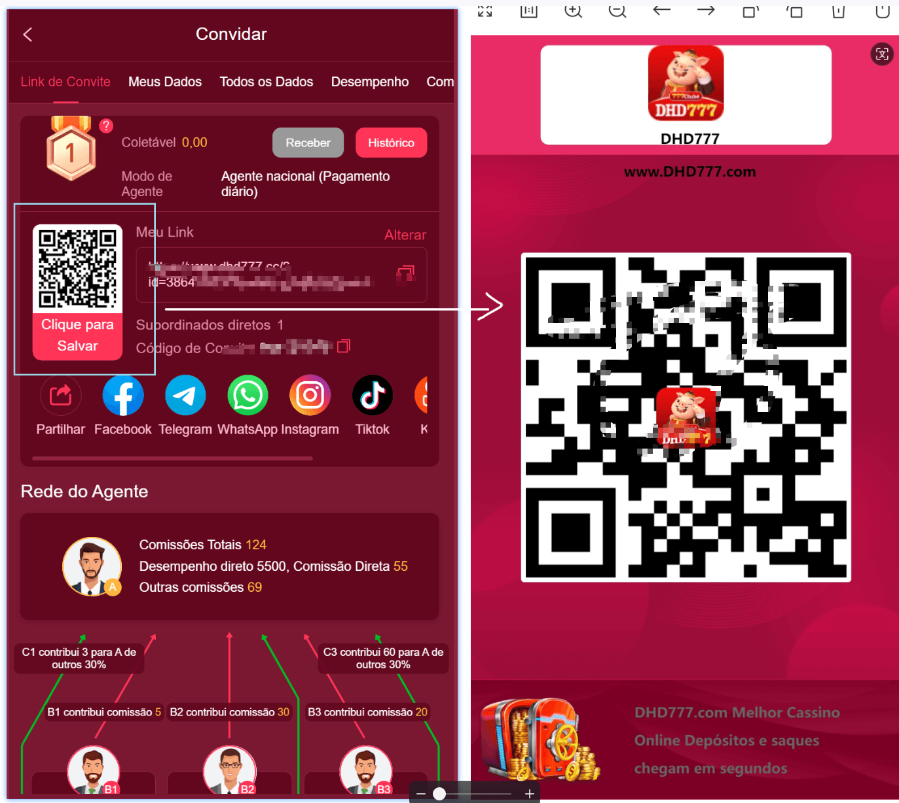
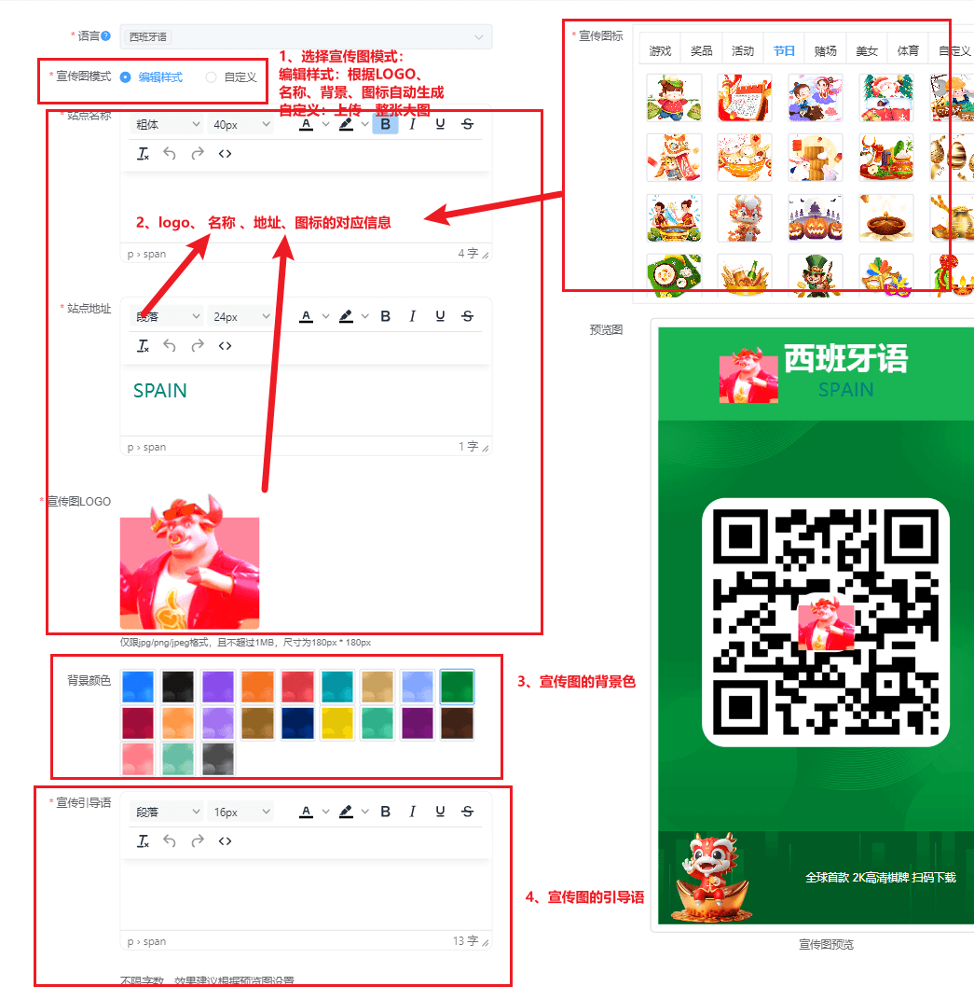
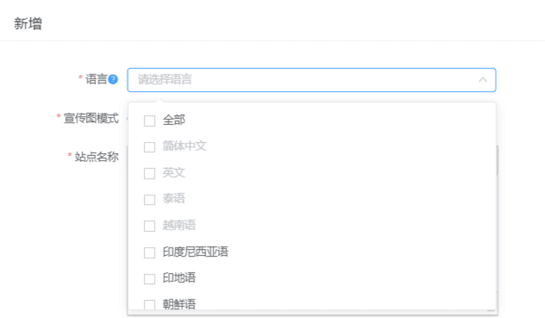
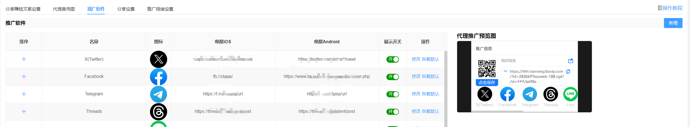
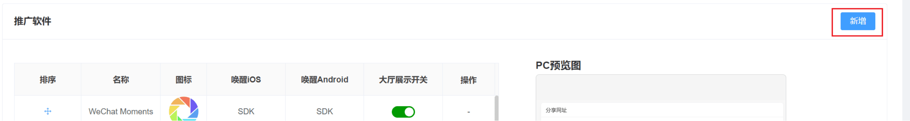
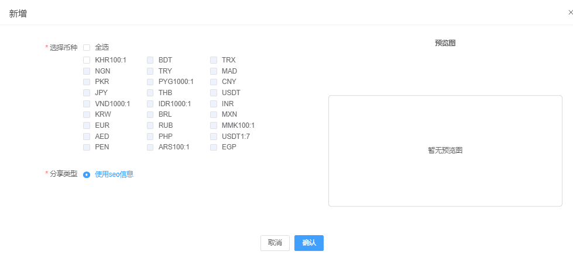
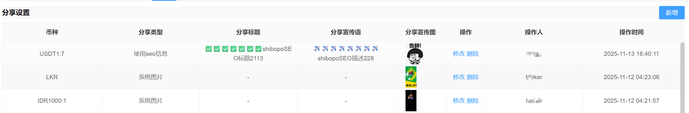
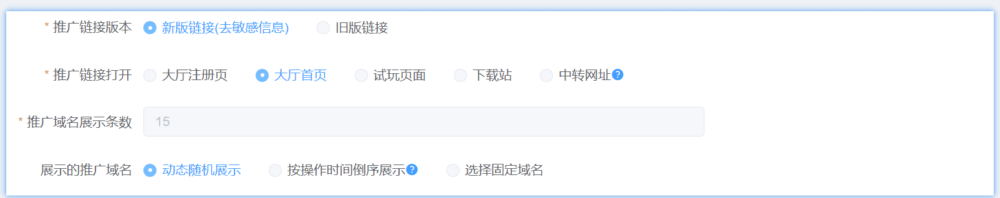

一、代理设置-推广设置
推广赚钱广告语
广告语的配置主要是做客户端该部分，如下图所示


代理宣传图
代理宣传的设置主要是在客户端的我的推广的二维码下载，如下图所示：

具体的配置说明，如下图所示：

代理宣传图多语言

- 语言：根据站点语言来展示对应的语言。
- 语言在进行设置之后则不允许再次设置；
- 当语言全部配置完成之后，则无法新增，则提示 “ 您所有的语言配置完成，无法再次新增 ”
- 站点名称、站点地址、推广宣传语，都采用富文本模式展示；
- 可以删除所有的内容，删除之后 就只显示默认的代理宣传图；
- 如果是旧数据，则需要在列表中显示配置项，语言为站点勾选的所有语言。
- 没有配置语言，则在web端只显示对应的二维码。
推广软件
推广软件的配置主要是在客户端的，如下图所示：

新增分享图标，展示按页面上下排序。
名称：推广软件的名称是区分大小写的。 即facebook 和Facebook 可以同时创建
默认：默认提供7款常用软件，可通过排序进行调整先后顺序，如下图所示：
若以上不满足可通过新增，进行添加个性化的配置。

分享设置
新增如下图：

新增成功如下图（可以操作修改或者删除已创建的分享设置）：

推广链接打开设置
该模块可对推广链接打开的页面方式进行配置，即通过推广链接可以访问的渠道来源。目前支持五种方式：大厅注册页、大厅首页、试玩页面、下载站、中转网址，如下图所示。

推广链接打开设置 新增被邀请人奖励。
被邀请人奖励，即通过代理账号/会员账号的邀请链接进行注册的账号（当前币种为开启状态），满足对应的要求，即可获得奖励。（即只要下级的注册方式是推广注册。）
默认所有的币种为关闭状态；当为开启时，通过推广链接打开的页面，则会有特邀奖励的悬浮窗。
金额类型
固定金额：即注册完成且达到要求之后，拿到的奖励为固定值；
随机金额：即随机获得奖励区间，所有的奖励都趋近期望金额；
展示最大金额：即用户看到最金额，固定金额中不需要配置，即展示固定金额。
有效被邀请人奖励
跟随有效人数设置，即满足在代理模式-代理公共设置中的有效人数
自定义：可以自己配置 有效投注和充值金额。